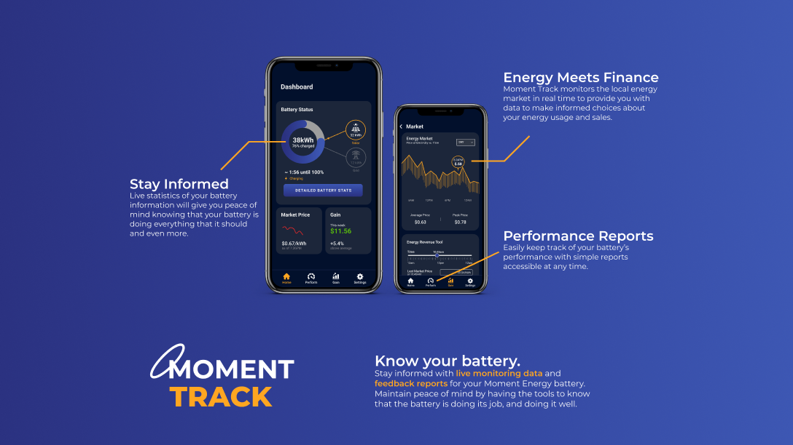
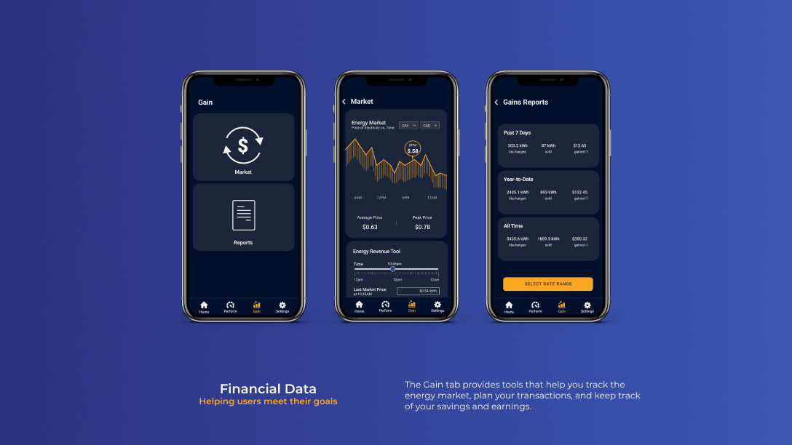

Moment Energy is a Vancouver-based cleantech startup that repurposes used car batteries into energy storage solutions. As of Fall 2020, they were in the early stages of development and implementation, mainly focused on creating a feasible business model and solidifying their technology. Being a startup company selling a large ticket item, Moment Energy ran into issues of lacking trust from potential customers. In an industry where reliability and benefit costs are extremely important to buyers, we explored how technology and interface could support the needs of a young startup battery company.
Moment Energy is a clean tech start-up company based in Vancouver that was created by four SFU MSE graduates aimed at creating sustainable energy solutions. They repurpose used batteries into energy storage solutions in aims to reduce landfill impact and mining. At the time of this project, the company had next to no customers. They were struggling with attaining new customers due to limitations regarding certification of their product and a lack of experience to support reliability and trust.
Increase sustainability by reusing lithium batteries that otherwise would end up in landfills
Reduce the world’s dependency on diesel by implementing efficient battery storage solutions
Reach rural communities with their battery storage solutions to improve the reliability and sustainability of their energy
Moment Energy's mission is to accelerate the world's transition to sustainable energy and reduce the world's diesel dependency. However, as a grassroots cleantech startup, there are many hurdles they must overcome in order to succeed as a business. Among these include:
Due to the potential hazards surrounding large energy storage units, customers often only consider certified products. The certification process involves a high upfront cost and locks in the design of the product, two factors that are extremely problematic for a startup company.
Strong legacies and brands can foster trust between companies and their customers. However, fresh startups do not have this luxury. Instead, they must go the extra mile in terms of product, service, or price. Additionally, clear communication between parties can help ease any worries or problems that occur over time.
Among energy storage options, the Tesla Powerwall poses extreme constraints on product quality, service, and pricing. Moment Energy must find their competitive edge while developing their product in order to attain sufficient cash flow.
We conducted ethnographic research at Moment Energy. We interviewed the four founders and sat in on their meetings, asking them questions about both internal and external practices.
Through this research, we found that internal practices between the four founders was quite strong. However, external communication to prospective customers and markets was difficult due to lack of credibility and lack of certification. Moment Energy is currently unable to prove the value of their product. We used this information to land on our initial design focus:
Establishing effective communication of Moment Energy’s values to remote communities in order to promote a trusting relationship between them.
For the first half of the project, we were stuck on this (and similar) design focus which revolved around communication. This was problematic because we did not have access to Moment Energy’s customers and relied on secondary research to back up our claims. This left us with rather empty justifications behind our work. Halfway through our project, we gained access to a few prospective customers and interviewed them over the phone. This allowed us to gain key insights which drove the project forward.
This was a great lesson because we felt the frustration of working in a space without sufficient research and experienced first-hand how key information can completely make or break a project.
After many logistical challenges, we were able to gain contact with three of Moment Energy’s prospective customers. These are people who own solar farms or work for contractors that need energy storage solutions. Since we still had a very limited set of players to work with, we conducted thorough interviews with each member in order to gain key insights for our project.
Here is a link to the interview notes.
We found that the prospective customers that we interviewed were extremely enthusiastic about working with Moment Energy due to the environmental benefits and great team, however they require more assurance that the company and product are reliable and will work up to their standards. Financial
After gaining valuable user insights, we were able to move our project into a stronger direction. By combining the several weeks of research, we decided that our intervention should help users:
Customers want to know that the product is reliable without guessing. Status and feedback are crucial for them to feel peace of mind and trust Moment Energy.
Customers inherently think about money. They are purchasing this battery with certain goals in mind: to lower their electricity bill or maximize profits with their solar panels.
Using our new, more substantiated research based on prospective customers, we were able to focus in on a refined design focus:
Create an interactive informational application for direct-to-consumer clients that assures them the product is reliable in order to promote lasting relationships.
We conducted a participatory workshop with Moment Energy to both share our findings from the user interviews as well as to ensure our design intervention would meet both the needs of the users as well as Moment Energy. This workshop was conducted online (due to the pandemic) via Discord and Figma.
Through design games, we narrowed down what ‘trust’ meant to Moment Energy, and brainstormed how they could deliver on that trust with technology.
Moment Energy has both business-to-business (B2B) and business-to-consumer (B2C) relations. As per our research and discussions, we narrowed in on B2C interactions.
During the H-Form activity, we learned that we were heading in the right direction with our concepts. The Moment Energy Team made further suggestions about possible interactions and refining the audience.
The Moment Track app was designed as a value-added feature that comes along with the purchase of a battery. It is meant to help support the user goals defined in our research and fulfill Moment Energy’s promise to their customers. Below is a feature overview for our designed application!
The Moment Track dashboard is customizable so that users can monitor pertinent information at a glance. The app is separated into two main pillars: Performance and Finance. These two pillars aim to directly support the user's goals in a practical manner.
Staying confident about the battery system's status and performance is important for creating trust. Allowing customers to be their own monitoring system not only gives them peace of mind, but also enlists the customers to work for Moment Energy by alerting them of any issues.
A major determining factor to purchasing a Moment Energy battery is financial sense. Equipping customers with a tool to manage, monitor, and maximize the savings & earnings gained from the battery will better help customers understand the benefit they can gain from making the switch. Additionally, the benefits of energy price monitoring and revenue calculators will provide ongoing utility to long-term customers.
Furthermore, archived reports will help customers track their progress automatically, creating peace of mind knowing they are always accessible through the app.
This project was an amazing learning experience. Failing to create a substantiated design focus due to the lack of key research taught us first hand that design insights cannot be forced. Although we struggled immensely for the first half of the project, everything fell into place after we performed interviews on prospective customers.
The lesson did come at a price; the time we lost cut into our creation process, leaving much room for improvement on the visual design side. We were able to showcase our desired functionality, but wish we could have implemented stronger graphics and flows.